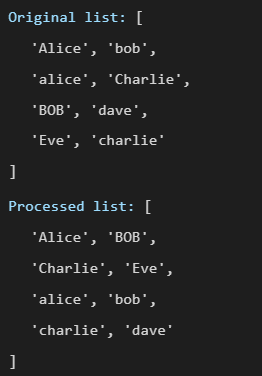
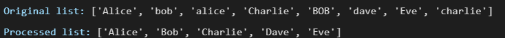
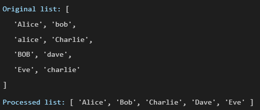

End of Module Assignment / Part A1
A1: Code Exploration
Two scripts, one in Python and one in JavaScript, collect names, remove duplicates and sort them. Both ran without error and both returned the wrong result.
The silent failure
This page is an excerpt from Part A1. One paragraph, which compares how readable the two languages are, is left out here because Part A2 develops that comparison. The scripts, submitted as appendices, appear under The scripts.
Both scripts contain the most dangerous kind of error: a logic error. The two scripts are designed to sort names. They collect them into a data structure called a set, which removes duplicate entries, then return the remaining names in alphabetical order. In testing, duplicates persisted in the output. This is because versions of the same name written in different capitalisation are treated as entirely separate entries by the code, when in reality they represent the same person. The code runs without crashing. It just produces the wrong result silently, and that is what makes a logic error more dangerous than a crash. Without case normalisation checks in place, records with capitalisation variants survive into the output undetected. In a payroll system this could mean someone gets paid twice. In a hospital database a patient could end up with duplicate records or be incorrectly discharged. Any count of how many people a system has served also becomes unreliable.
Text description of Figure 1
Processed list: ['Alice', 'BOB', 'Charlie', 'Eve', 'alice', 'bob', 'charlie', 'dave']

Text description of Figure 2
Original list: ['Alice', 'bob', 'alice', 'Charlie', 'BOB', 'dave', 'Eve', 'charlie']
Processed list: ['Alice', 'BOB', 'Charlie', 'Eve', 'alice', 'bob', 'charlie', 'dave']
Test results
Testing the scripts across four input categories made the scope of the problem clear: normal names, capitalisation variants, non-list values, and mixed types each produced a different result. Correct execution, silent logic error, and defensive error handling are not the same outcome. That distinction is what the modifications are designed to address.
Table 1 Test results across four input categories for the original and modified scripts.
| Test Input | Expected Output | Original Script | Modified Script |
|---|---|---|---|
| ["Alice", "Bob", "Charlie"] | ['Alice', 'Bob', 'Charlie'] | Correct — 3 entries returned | Correct — 3 entries returned |
| ["Alice", "alice", "BOB", "bob"] | ['Alice', 'Bob'] | 4 entries — capitalisation variants treated as separate | Correct — 2 entries returned |
| "Alice" (string, not list) | TypeError raised | Runs silently, produces incorrect character-by-character output | TypeError raised with descriptive message |
| ["Alice", 42, None, "bob"] | ['Alice', 'Bob'] | Crash or unexpected behaviour on non-string items | Non-strings skipped; ['Alice', 'Bob'] returned |
Each test case in the table maps directly to a fix in the modified scripts. The row for non-list input corresponds to the validation check added at the start of the function, and the capitalisation variant row shows precisely what the dictionary and Map structures were designed to resolve. Both checks are explained in the inline comments. This reflects the defensive programming principle of failing fast: surfacing invalid input at the point it occurs rather than allowing incorrect data to propagate silently through the system. The ACM Code of Ethics (2018, principle 2.5) requires that systems whose risks cannot be reliably predicted should undergo frequent reassessment or not be deployed. The original scripts failed that test; the modifications are what bring them into compliance.
The modification
In modifying the script, the first priority is stopping it as early as possible if something has not been inputted correctly. If the input is not a list, the script raises an error immediately rather than running and producing a wrong result silently. The larger and more important modification addresses case-insensitive deduplication. The original code was case-sensitive, meaning it treated alice, Alice, and ALICE as three separate entries. The fix requires inverting the original assumption. Instead of a set, the modified script uses a data structure called a dictionary, named seen. For each name that passes through, the dictionary stores two versions of it. The first is a lowercase version, so alice, Alice, and ALICE all become alice. The second is the Title Case version used in the final output. So when Alice arrives first, alice is stored as the key and Alice is stored as the value. When alice arrives next, the code checks the lowercase key, sees that alice is already there, and skips it. By the time all eight names have been processed, only five unique keys exist in the dictionary, each with one clean Title Case value attached to it. Both languages now use hash-based structures, preserving O(n) average complexity while eliminating the silent duplication flaw. The difference is not computational speed. It is correctness. The difference, as with the original scripts, is in the syntax. JavaScript uses an object called a Map while Python uses a data structure called a dictionary. These scripts are a reminder that code cannot be taken for granted. Regardless of the language, Python or JavaScript, the logic is the same and the assumptions travel with it. Assumptions made during development become bugs in production. Remove the assumption, and you fix the bug.

Text description of Figure 3
Original list: ['Alice', 'bob', 'alice', 'Charlie', 'BOB', 'dave', 'Eve', 'charlie']
Processed list: ['Alice', 'Bob', 'Charlie', 'Dave', 'Eve']

Text description of Figure 4
Original list: ['Alice', 'bob', 'alice', 'Charlie', 'BOB', 'dave', 'Eve', 'charlie']
Processed list: ['Alice', 'Bob', 'Charlie', 'Dave', 'Eve']
The scripts
Original Python script
# clean_names.py
# This script is for a function to process a list of names by removing duplicates
# return them in alphabetical order.
def process_names(names):
# set() removes duplicate names automatically
# result is converted back to a list so it can be sorted
# sets are unordered so names may not be in the same order as the original
unique_names = list(set(names)) # note: set() is case-sensitive so "alice" and "Alice" are kept as separate names because that is how they are seen.
unique_names.sort() # sorts alphabetically since they were not before
return unique_names # sends the finished list back
# Test list with duplicates and inconsistent capitalisation
test_names = ["Alice", "bob", "alice", "Charlie", "BOB", "dave", "Eve", "charlie"]
print("Original list:", test_names)
print("Processed list:", process_names(test_names))Modified Python script
# clean_names_modified.py
# This script is a modified version of clean_names.py
# and returns them in alphabetical order with two improvements added.
def process_names(names):
# MODIFICATION 1 - Input validation
# checks if the input is a list before running
# without this someone could accidentally pass in a single name like "Alice"
# instead of ["Alice"] and the function would produce wrong results silently
# raises an error with a clear message so the user knows exactly what went wrong
if not isinstance(names, list):
raise TypeError("Input must be a list of strings.")
# MODIFICATION 2 - Case-insensitive deduplication
# a dictionary is used instead of set() to fix the case-sensitive problem. It is empty first
seen = {}
# loops through each name in the list one at a time
for name in names:
# skips anything that is not a string so the function does not crash on unexpected items like numbers or None
if not isinstance(name, str):
continue
# set() would keep "Alice" and "alice" as separate names which is not what we want. Big mistake in original code.
# converting to lowercase means all variations of a name are treated the same
key = name.lower()
if key not in seen:
# stores the Title Case version so the output looks clean and consistent
seen[key] = name.title()
unique_names = sorted(seen.values()) # sorts alphabetically so output is predictable
return unique_names # sends the finished list back
# Test list with duplicates and inconsistent capitalisation
test_names = ["Alice", "bob", "alice", "Charlie", "BOB", "dave", "Eve", "charlie"]
print("Original list:", test_names)
print("Processed list:", process_names(test_names))References
- Association for Computing Machinery (ACM) (2018) ACM Code of Ethics and Professional Conduct. Available at: https://www.acm.org/code-of-ethics (Accessed: 30 March 2026).
Feedback
Your work demonstrates a highly effective exploration of both scripts. You clearly identify the issue of silent logic failure and explain how case sensitivity leads to incorrect outputs despite successful execution. The structured testing across multiple input categories is a particular strength and shows a strong understanding of validation and defensive programming. The modifications in the revised Python script demonstrate appropriate use of input validation and case-insensitive deduplication, and the underlying logic is well explained. This section could have been further strengthened through more concise presentation and clearer distinction between descriptive explanation and evaluative discussion. Greater focus on key findings would improve clarity.